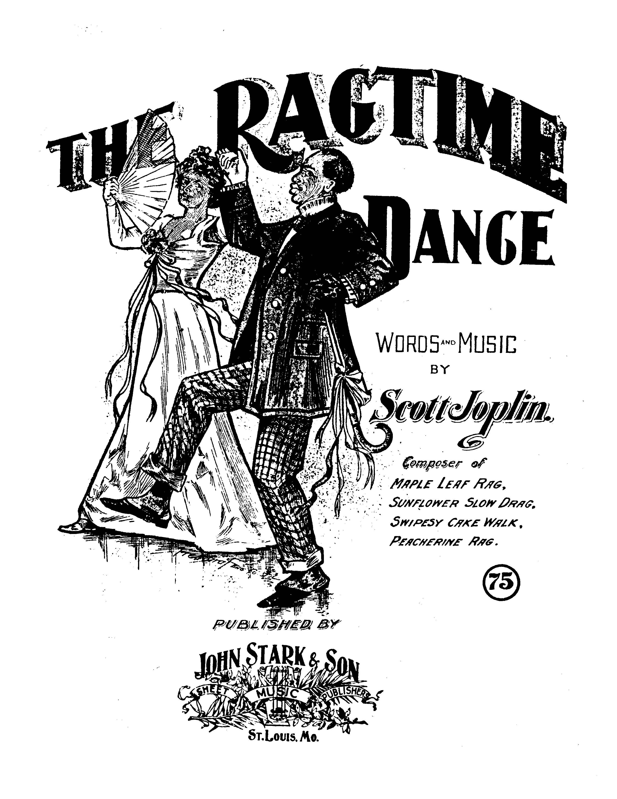
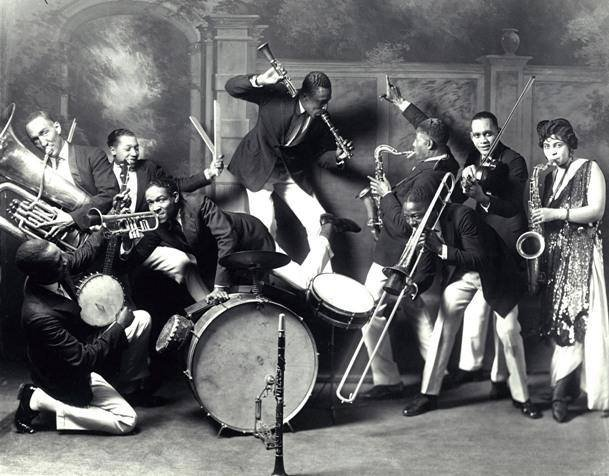

Ragtime
랙타임은 행진곡 스타일 음악의 변형이면서 아프리칸 음악의 폴리리듬을 가져온 특징이 있는 장르이다. 랙타임의 대중화에
가장 크게 기여한 인물은 스캇 조플린이고, 이후 랙타임 작곡가/연주자들의 음악에 막대한 영향을 미쳤다. 1917년 이후 랙타임은 대중적
인기를 잃었지만 1940년대 초반과 1950년대 녹음 기술의 발전과 많은 재즈 빈드들이 랙타임을 레퍼토리로 활용하면서 다시금 많은 랙타임 곡들이
창작되고 발매되었다.
랙타임은 2/4 혹은 4/4 박자를 특징으로 하고 있다. 왼손으로 강박에는 베이스 노트를, 약박에는 코드를 짚어주며 오른손으로는 당김음 멜로디를
연주한다. 오른손으로 연주하는 리듬의 특징을 '래그' 혹은 '당김음 리듬'이라고 한다. 3/4박자로 진행되는 왈츠 형식의 랙타임은 '랙타임 왈츠'라고
부르기도 한다. 랙타임은 주로 피아노 독주 형태로 연주되거나 소규모 밴드 형태로 연주되는데, 랙타임의 피아노 연주스타일은 이후 스트라이드
피아노(Stride piano) 주법에 영향을 미치기도 한다.
대표적인 뮤지션들로 스캇 조플린, 조슈아 리프킨, 유비 블레이크, 위니프레드 애트웰 등이 있다.
The Entertainer - Scott Joplin
Classic Rag - Eubie Blake
The Poor People of Paris - Winifred

